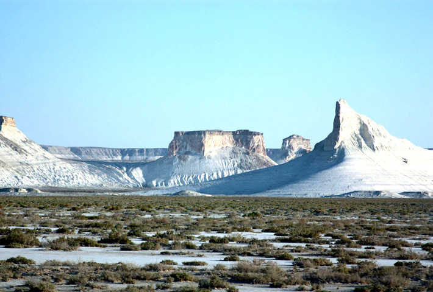
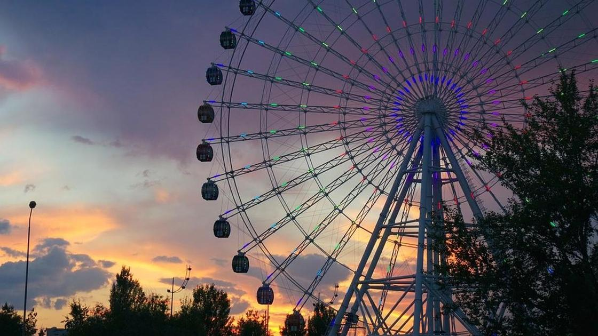

City at the edge of two continents: Europe and Asia
General Information
Atyrau is the administrative center of the Atyrau region. The city is better known to the general public as the "oil capital" of the Republic of Kazakhstan. It was here that for the first time in the territory of modern Kazakhstan in the 17th century, the first oil deposits began to be developed. Then, by the name of the founder, the city received the name Guryev (until 1991) Atyrau is a city that stands right on the border of Europe with Asia. This symbolic border passed over the bridge over the Ural River for many years. And although geographers today dispute this division, the townspeople are still proud of their privileged position as residents of two continents. And city guests, of course, are in a hurry to take pictures at the memorial sign.
Interesting facts Atyrau city
• The largest oil refinery in the country is located on the territory of the city, it is called Atyrau. Its capacity is more than 5 million tons of oil per year, which is 1/3 of the total “black gold” mined in the country.
• 80 km from the city there is a giant Kashagan field, which is the world's largest oil field at sea. Kashagan's geological reserves are estimated at 6.4 billion tons of oil. With Kashagan, Kazakhstan plans to enter the TOP 5 world oil producers.
• Few people know that the famous film director and producer Timur Bekmambetov was born and raised in Atyrau
In Atyrau there are many parks, museums, theaters and a large number of other attractions that attract visitors to the city and delight local residents with its beauty. Only a few of them are in this list:
Pedestrian bridge "10 years of independence" Atyrau
In 2001, a pedestrian bridge over the Ural River was built in Atyrau. The unique design of the bridge is designed in such a way that its supports do not interfere with navigation, and also do not prevent sturgeons from freely spawning. This is the only footbridge that is listed in the Guinness Book of Records as "The Longest Footbridge in the World."